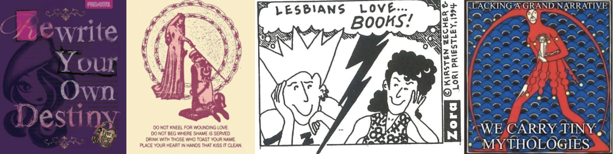

Samples
I've got a penchant for women of all kinds; I write everything from female identity to femslash. All writing by Miyan @ivoselle.

Prose
01 / 2026 And when Hedda first held that cursed pistol, she couldn't do much but feel its searing cold steel imprint upon her palm. In the times previous, she'd refused to let the General drag her to the back-woods of their manor, ran into her mother's skirts with her hands balled up at the very offer. "She can't always be like this," the General would say, muffled in the skirt and gruff from long weeks of ordering and pointing around. So her mother would respond, in kind: "You can't expect her to, dear," smoothing down the stray hairs escaping from Hedda's bonnet. Always, she'd relish in the warm, salty tears dissolving into the frills of her frock, grateful for their expedient disappearance. She'd stay like that, her mother too, her legs surely weary under the heavy petticoat, until those splotches dried up and there was nothing left to cause a disturbance. She'd been awake all evening, sitting up in the parlor with her nails digging into her nightdress, feet swinging back and forth, not quite reaching the soft surface of the Persian rug. "Come along now, Hedda," the General had said coolly, a dark shadow cast from the end of the corridor, "You needn’t be so afraid." It was the dead of night, and her mother was adrift in the sloping curves of the General's bed, blissfully unaware of the tonic he had slipped into her evening tea. But Hedda had seen; she always did. He’d turned around without waiting for a response. As if it was entirely unfathomable that she would disobey, blanketed only by the curdling tenebrosity of the manor. Just as he thought she would, Hedda hoisted herself down from the spindle-back seat, trundling after him. The General’s shadow receded around the corners. Hedda had never really been able to match his swift gait. By the time she reached the door, she’d only tripped over her lace once, lifting it up as she stepped down to the yard in which her father awaited her. The nightgown, which was already too long— “We’ll bring it to the tailor once your father returns, darling,”— would be soiled by the end of this, Hedda urgently thought. What would her mother think? What would the lady-maids who spun up her hair each morning think? Her garments were not yet covered in the mud of the late-night drizzle. There was still time. The General arose from the armory, appearing with candlelight through the rain. In his sandpaper hands, he held a cold pistol engraved with their family crest. She shivered a bit. “I’m sorry, Father,” Hedda began. “I don’t believe I—” “Set your hand high on the instrument, rest your trigger finger perfectly flat.” Forced into her palm, slick with balm from her maids’ nighttime ministrations, was the pistol. Before it could slide down into the grass, Hedda steadied her grip, the silver shine marking on her irises, reflecting the General's lamp. There exists little time in-between his words and her shot. She takes the General's order and traverses beyond it, sloppily bearing down on the trigger without proper preparation against the recoil, sending a bullet up into the heavy trees. He'd given her a loaded gun, after all. "Hedda, be still." So still she became, his looming presence casting an iron grip over her very being. No longer did she tremble, or worry about her damned gown, billowing and battered by the ever-increasingly oppressive storm. "Be still and aim for the tree, impose your bullet with the gun." Her bullet. It was hers, wasn't it? The General held no weapon, had nothing drawn and ready to shoot in his nighttime jacket. Turn to him, aim. Remember the recoil this time, she would. Think of her mother, jolting awake not at the sound of the shot, but at the smell of blood splattered across the armory, and her belov'd daughter dashing into the nothingness of the woods. Her emptiness, the gutted emptiness of the General's body, and Hedda's emptiness, a poor daughter-like replacement for a son. The base of the tree exploded, discarded bark dragging deep into the mud. "Too low, girl. That'd hit someone's knee at best," the General remarked, leaning up against the tin hermitage of the armory. She'd over-compensated for the recoil, her arm tense and her fingers like spindles on a wheel. Hedda dropped back, staring at the shards of bark spread shamelessly around where her bullet had shattered the root. Control the pistol, her father's pistol. At that, a horrible fever engulfed her shivering frame. Such a chance, an opportunity for complete disarray, unlike anything the General's men had ever seen in the throes of battle had ever seen previously: stolen. The etched crest of the base singed Hedda's virgin palm, as if it were a hot brand. Then, a droplet trickled down the base of the gun, embedding itself in the delicate wrinkles of her index finger.
02 / 2026
"You're going to stay in London?"
Katie seems surprised. "You don't have to stay out there, you know, I've got a nice place."
Emily doesn't know if she wants to say it's for Effy. She doesn't understand why she's waiting for a girl that wouldn't have given two shits about her before Naomi, and Katie surely wouldn't know either. But she doesn't have much to lose.
"Effy's being released from prison," Emily says carefully, "In just a year."
If she remembers correctly, Emily sees the tiniest flicker of shock pass through Katie's eyes. Then there's nothing more to say at all.
It's a whirlwind. Katie's got the nice kind of cigarettes and they're out on her balcony and it feels just like when they'd smoke in their old room right out the window, all their fans blowing at them. But they're in this new place which is at the same time very familiar, and Emily thinks she could stay here, stay with Katie, and she'd become good again. Katie's thinking all of it too, clearly, telling her that Bristol's got loads of new people to meet, lots of lesbos moving in from Birmingham and Wales-- not that she's suggesting Em should find someone new, obviously (Emily even laughs, thinking of how far Katie's come from we agreed not to be gay), and that she can come work and maybe even take some experimental photos at the women's clinic Katie runs (Katie, that's kind of fucked up), and it all seems so safe, homely, like those lost years had passed in just a minute and they're chatting after a day at Roundview.
"But, Em, if you want to go to Effy, it's alright. You'll be alright with her," Katie eventually relents.
"Maybe I'll stay for a while here. I have the whole year, don't I?"
"Just don't fall in love with her, 'kay?" She gives Emily a sideways smirk. "That girl's dangerous, she is."
Emily takes a drag of her cigarette. "You've not seen her! She totally turned around, no more punky stoner bitch," she says, rolling her eyes, "More like one of those office ladies who'll take all your money while you're distracted by their tits."
Katie doubles over laughing. She tells Emily she just must see this, she'll accompany her on her next visit, and they giggle about until the sun goes down and the cigs stop making them warm. The whole time Emily doesn't think about Naomi, doesn't think about how maybe Katie would have been OK with her joining them on the balcony, doesn't think about how her beautiful cool eyes always shone through thick cigarette smoke.
They're in bed next. Katie hasn't got two beds anymore, so they're cramped up in a not-quite-queen-sized bed. When Emily asks how a man she's fucking could possibly fit in it Katie responds that she's on a celibate streak and that this flat is a sacred female palace, that she'll only have sex in the guy's house now.
Later, Katie tells Emily that she's sorry about Naomi. She's told her this countless times through the phone screen thousands of kilometers away, but there's something in Katie's inflections, the little cracks in her voice makes Emily feel like she's been ripped open wide, all the wounds bleeding again. She doesn't realize she's shaking until Katie wraps her up in her arms again.
"Em, was she good to you?"
"She tried to be, as much as she could."
"Cold bitch, wasn't she?"
They're both crying, now.
"Yeah."
"Night, Em."
03 / 2026 “Where’s the best fireworks in Hong Kong?” Chiyo abruptly asks. “Ah, well. You’ll have to make it over there in time,” which isn’t a problem for her at all. And that’s how Chiyo finds herself nibbling from a covered box of street food on the Tsim Sha Sui Promenade, slipped in among tourists and locals alike, staring up at the sky, wishing there was a warm presence by her side, a specific warm presence with hair tightly braided and scoped rifle cradled under her arm. But Ena’s not there, and the fireworks are about to blow, and Chiyo knows she isn’t supposed to love someone, that’s supposed to be for reincarnation, let alone another cupid, but she just can’t help it at all, breaking the rules with no one watching, tears sliding down her cheeks. Her wings are spread wide and God help her, she still isn't taking up any space. Hong Kong’s transient, they say, all the people these days just passing through, just trying to spend a buck and make two, and Chiyo has never felt so alone. And she’s not even angry about it, can’t crack a joke when there’s no one to make it too, can’t pick a fight when there’s no one to fight with. The lights ring up in the sky in complete silence, blurred and flashing in Chiyo’s glassy view. So many people in love, kissing, she’s trying to look straight up but she can’t stop watching it all, lipgloss left on necks and hands on the smalls of waists, knowing that cupids had been hard at work in the past few weeks, past few years, past few lives. Her eyes are guiltily trained on the two women in front of her, left hands locked together, right hand thrown over a shoulder and the fireworks dancing across their jet-black hair, intertwined in the mess of their makeout. And she knows they’ll head back to one of their flats, maybe twenty-two floors up, dropping eventually to the bed, rolling awake laid bare to each other in the light of the new year. Skin touching skin. Never cold. When everything starts to die down, couples shuffling into taxis or trailing along the Avenue of Stars, Chiyo’s lost the romance for good. It’s smoky and everything simply looks grey and dull, maybe she wants to fight, find some cupid in Shenzhen and fuck them up with her frigid metal and sharp bones, draw fists to flesh, and collapse for the night. But all her muscles are screaming stay down, so down on the ground she stays, silent tears staining the concrete.
04/ 2025
It’s raining again. Camie’s dull skin looks shimmery under the blurry sky. She’s breathing warm air, it’s pouring, and Miré can see that the drops have filled in the little creases under her nose. The tall grass is getting itchy and there’s always tiny bugs littering their ankles, dying one by one in the suffocating marsh. Mud’s enveloping whatever’s on the ground and it’s rising.
Thunder rolls. It doesn’t clap just yet, held thick in the air. Camie’s eyes look quite sunken but she’s smiling. Someone else is gathering as many of Camie’s features as she can into her memory like a desperate man begging for morsels, feeling a little bit strange. Another deep exhale; condensation appears on both faces.
Miré hesitates before whispering.
“Are you going?”
Someone’s always coming and leaving in this world. The world is blurry, so Miré doesn’t hear or see the answer. She doesn’t need to.
“Okay,” Miré responds, like she’s listening. Sharp, tall grass rips at her skin and she can’t help but remember that she’s a murderer, a princess, a professional, just a stupid little girl. Treated like an ornament by another little girl. It’s all just toys in the rain; the lead paint seeping off with every drop, leaving hollow promises and toxic plastics behind.
Camie’s face is very, very, close, and Miré has half a mind to reach in for the familiar touch, a type of movement that claws at her bounds and frees her from the box. Her arms ache, the invisible parts, remaining limp by her sides. She won’t, not this time. Just a kiss isn’t enough for the childish dolls who’ve already left the dollhouse. The rain eats into the house anyways.
Poetry
DEA EX MACHINA / 2026
Time is contained in the gears that is, hastily fastened to the notch of a hat,
gear-shaped buttons sewn into a pinstripe vest and worn, vainglorious
in the throes of a tabletop game. Biblical & rustic &
protracted across fiction and reality: Lyra’s daemon & my father’s deck of cards,
my floppy velvet beret and exactly where it lies, rotting as detritus.
We dreamt of crayon angels in steam, copper zeppelins soaring into the heavens,
airships & carriages & gas-lit streets,
Edwardian silhouettes & deep bowing hats that’d hide a face, all Gainsborough-like.
And faces we wore, daytime in responsibility and ambition;
our nighttime zenith — world-creation in pencil sketch
a steaming bowl of soup and the rest of time at our fingertips. Legs swinging back and forth,
not quite reaching the kitchen floor, prattling on to anyone who’d give us the time of day.
What it is, then: time is swallowed up in abandonment gears fail to rotate in disconnect
over-active children must be disentangled from the web of their own making.
Top-shelf of the highest brow, so when storms come when my house trembles on its rafters
when gears come loose & leave notches in the hardwood flooring:
Laura could never quite shake Carmilla from her psyche. Sharp teeth of a dull copper wheel—
vampirism, sinking into my sun-stricken skin. Rough stitches of thick twine woven between my fingers cogwheels strung out in procession awaiting my return to myth.
The Maystadt anbaric scalpel is used to separate a human from their daemon, remove a clip from long, unruly hair, unsheath a gun from its holster, fallacieux memory and skins to wear,
pinned between the fabrics of this epoch.
bankrupt girls / 2026 And the gutted plum prattles on. Stumbling across the chasm between degeneracy and delight, deep violet & fleshy & ripe, without a body to deprave, a presence of mouths A hard seed inside. A finger to the curve purity protracted in skin-deep wounds, all bitter juice and stained handkerchiefs spring is to come, first to emerge from the ground so gently, judgement falls, splattered romantically across white lace locked lips and heavy breaths, girls with bodies still unbroken. Now you play the voyeur: Purple drips slow across the breast. Another bite. Sucked down the throat long with motion & lack the control & claw at the cinderblock behind her & rake at bumps along the spine & do away with those discs and pins that hold a body together. Satisfied? Have half a mind to do it like those girls in westerns, who’ll drive it into the wall and dress her down in the barnhouse, wake up and play girl sheriff with abandon and gnaw on the title, get sober on that florid berry watching naked girls twist in grimy bedsheets and unpaid debts, & when the hand is outstretched to take, polish each phalange into shiny coin. Now it’s all over, we’re rolling faster than ever before. Uneven skin against smooth scars won’t let you forget the body, even when it is far away. Prune dry and shrinking and dying upon her collarbone. Shiny times ahead.
RUGBURN / 2026 Lonely strands half-grey and coiled around the fibres of the rug for dear life. Tangled, our forthright shortcomings scratching up-down your shoulder-blades it hurts so good, that carpet-burn. Hot and dry. None of the sloshing business and all of the hair-pulling heartache. Damp hair in-between two long fingers, balmy irons connected by thin, webbed skin. Curled. Goes so, so straight. Oh, you can imagine the sizzle. You’re sopping mess, now birthed anew it’s just a pool, a shallow tile-laden thing but the BODIES are left behind, corpses piling so high you don’t even know where to step in. Take the plunge! Take it! On the television, from the pastoral: You could see them crying, mouths turned perfectly up and tears-of-blue streaking down alabaster skin. Joy— in the wetness, the capability to sink down and come right back up. You want this, right? and step, cut, tile glassy warmness, drip-drip-drip. And step (over a Sodomite’s severed hand, murky-green in the reflection of the camera), & cut (off the shackles of false worship, your whirling loves and heavy-breathing passions) & tile, blank detailing on a sordid lady, condemned to what she really wants. HE waits, amongst the garish violence, bloodied water miraculously cleansed in his wake. Grabs your neck and holds it tight, wet hands on cold body. Down-down-below. Testify! Testify! Testify! What must be real lies in your pooling hands. Sand-stained hair. Feverishly manicured fingernails tracing your palm. Idolatry in material existence, two irons clamped around the world, doused in the heat.
Since Stalwart Machines Don't Dream / 2026 Coming into view is the driver, swerving around skin embossed into gritty shadow tinctured by the car window & deepened by mottled sunglasses. Known you from my dreams the ones in which I go up in glorious shards, dripping down in red; speckling the crushed tin as my vehicle crumbles to bits. I never really wanted it knowing someone so badly & inaccurately as “us” existing only in duochrome leaking red from my brake-lights into the light-holes of your crevices. We were made for war crushing bodies to a testing wall & seeing how far we’d go permitted and litigated up the line all glossy & polished, long gone now, further than we’d ever been before.
LAST THREE DAYS / 2025 FRIDAY Insatiable, my hands reach for your arms only in the dark and climb up the muscles in your shoulder, weathering your solid rock to my frigid touch. I’d love to be worldly but it always seems that there’s a hometown grocery store calling my wretched name And so gently, you wonder aloud why I dropped your hand when we walked to the fireworks show, why I wouldn’t kiss you under the eruption of everything and— Instead of answering, I closed my eyes, feeling the sticky air and the low hum of the air conditioner, and the buzzworms choked us to sleep as the sky exploded outside. SATURDAY You’re sick, aren’t you? In more ways than one. The doghouse is a perfect place for my malleable skull. I cower but I take the blows for you, eyes between my legs. At the end of the night I’ll slink back to your room, your mousy hair and mischievous eyes erasing the rakish men who lean over the counter with business cards between their orderly, filed nails. Saturday night turns to Sunday morning, and you can sing your sacrilege as long as you want, but we both end up across the pews from each other in the morning. SUNDAY You slipped away during a hymn, and as I saw your eyes sparkle with anger, the choir sang to the heavens, “Are your garments spotless; are they white as snow?” and I knew to sing the next verse in a roundabout sort of way, your mouth on mine, asking Are we washed in the blood of the Lamb? Our hopeful little piggy bank: gutted, splayed across my doorstep. You’re gone and all the one-dollars and two-cents and nights spent vomiting up love till the phlegm was clear and sinless are gone too. I waited too long but maybe now you’re free from the hand of god between your legs.